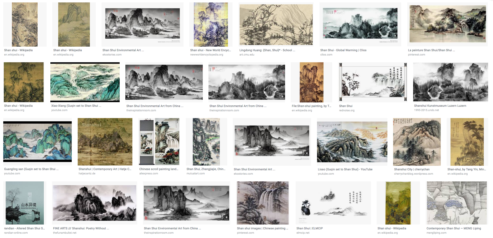
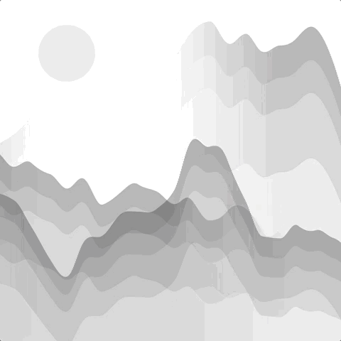
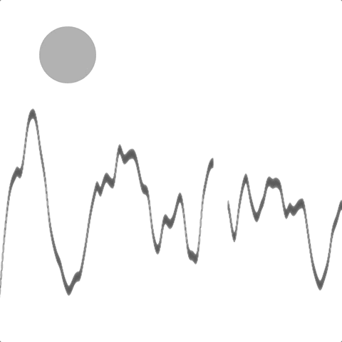

Overview
Featuring at p5js.org homepage (July 30, 2018 - Feb 9, 2019).

Process
Shan Shui painting refers to a style of traditional Chinese painting that involves or depicts scenery or natural landscapes, using a brush and ink rather than more conventional paints (wikipedia). Below is a screenshot of Google search result 'Shan Shui'.
Final Sketch, link to live demo.
Initial Prototype, link to live demo.
